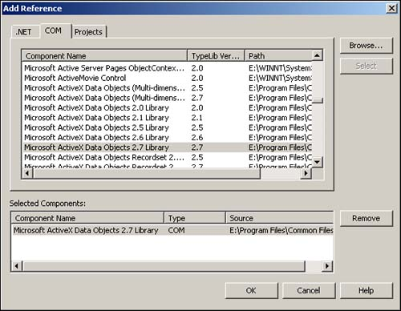

Referencing the Type Libraries
Before seeing how to use these collections and objects, you need to know how to reference the object model libraries for use. The object models are found in type libraries in the file system. A type library contains the information about the object models such as the collections, properties, and methods. Referencing the type libraries isn't difficult, but it is still very important.
Because Visual Basic .NET uses ADO.NET by default, you will have to reference all the object models you are going to need. To reference the object models, choose Add Reference from Visual Studio .NET's Project menu. After you're in the Add Reference dialog box, click on the COM tab. You then have to find the type libraries for the object models and select them. The type library name that you will be using is as follows: Microsoft ActiveX Data Objects 2.7 Library. This is also referred to as the ADODB object model.
You can see this library, as well as other Microsoft ActiveX Data Objects Libraries, in Figure A.2.

Tip
 |
You can use both ADO libraries and ADO.NET classes in the same application without worrying about the order of libraries in the references. This is great when you're converting applications from ADO to ADO.NET. To use all libraries and not worry about the order of reference, you must prefix your objects with the library with which they come. Here are some examples, with the specific library types:
Dim odaTest as OLEDB.OLEDBDataAdapter
Dim rstTestADO as ADODB.Recordset
Dim catTest as ADOX.Catalog
Although not all objects are shared between the libraries, it's a good idea to specify the library while
you're getting used to the objects.
|
After the library has been selected, you can see the ADODB reference entry in the Solution Explorer under references.